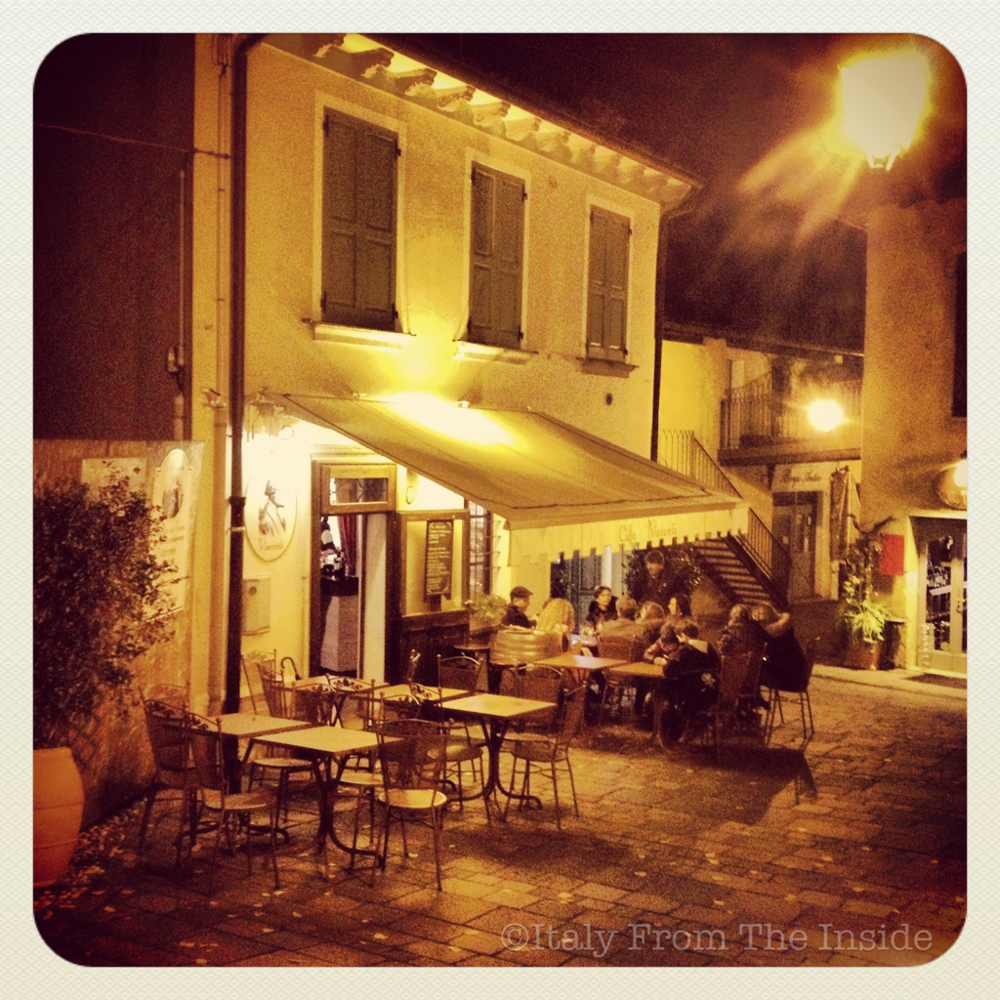

In my opinion, the medieval town of Borghetto, near Verona, is one of Italy's best kept secrets. A tiny and picturesque village, Borghetto is known for its water mills and romantic setting. You can even spend a night in one of the mills and enjoy the suggestive view over the Mincio river.